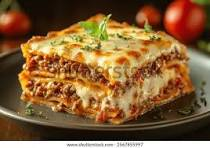

Home
Lasagna
Información sobre el plato
La lasaña es un plato tradicional de origen italiano, muy popular en todo el mundo. Consiste en capas alternadas de pasta, salsa boloñesa, bechamel y queso, que se hornean hasta quedar gratinadas.
Es una comida ideal para reuniones familiares, ya que es abundante y sabrosa.
- Origen:Italia(región Emilia-Romaña)
- Tipo de plato:Principal
- Tiempo aproximado:1 hora y 30 minutos
- Raciones:Para 4-6 personas
Ingredientes
Salsa boloñesa
- 500 g de carne picada (ternera o mezcla)
- 1 cebolla grande
- 2 dientes de ajo
- 1 zanahoria
- 400 g de tomate triturado o salsa tomate
- Aceite de oliva, sal y pimienta
- Oregano o albahaca(opcional)
Bechamel
- 1 litro de leche
- 80 g de mantequilla
- 80 g de harina
- Sal, nuez moscada
Otros Ingredientes
- Placas de lasagna(precocinadas o para hervir)
- Queso rallado oara gratinar(parmesano o mozzarella)
Receta paso a paso
Preparar la salsa boloñesa
- Picar cebolla, ajo y zanahoria.
- Sofreír en una sartén con aceite.
- Añadir la carne picada y dorar.
- Agregar el tomate, sal, pimienta y hierbas.
- Cocinar a fuego medio 20–30 minutos.
Preparar la bechamel
- Derretir la mantequilla en un cazo.
- Añadir la harina y mezclar hasta formar una pasta.
- Verter la leche poco a poco, removiendo con varillas.
- Añadir sal y nuez moscada.
- Cocinar hasta que espese.
Montar la lasagna
- En una bandeja para horno, poner una fina capa de bechamel.
- Colocar una capa de placas de lasaña.
- Añadir salsa boloñesa y bechamel.
- Repetir capas hasta llenar la bandeja.
- Terminar con bechamel y queso rallado por encima.
Hornear
- Hornear 30–40 minutos a 180ºC.
- Gratinar los últimos 5 minutos para dorar el queso.
Consejos Adicionales
- Déjala reposar 10 minutos antes de cortarla: quedará más firme.
- Puedes añadir verduras (espinacas, calabacín) si quieres una versión más ligera.
- Si usas placas sin precocer, asegúrate de añadir bastante salsa para que se hidraten.
¡Aqui tienes una imagen de como nos quedó a nosotros la Lasagna!
